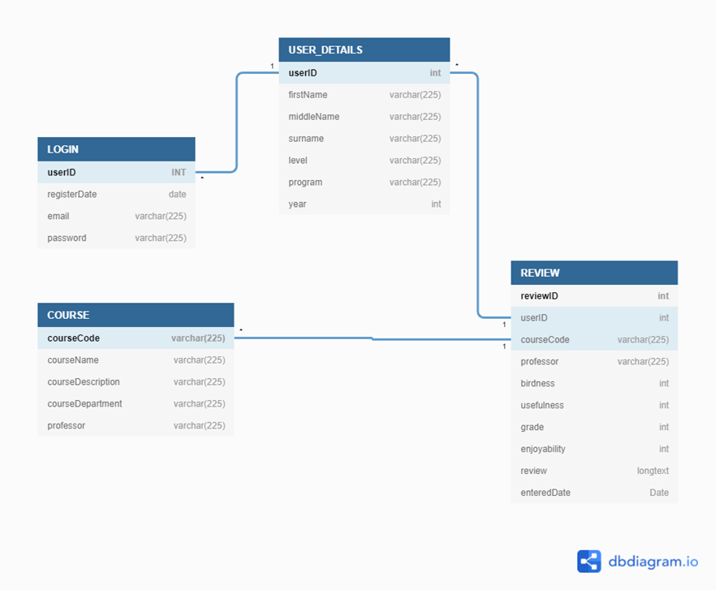

WLU Go is a web application that allows users to view, rate, and review the courses offered at Wilfrid Laurier University (WLU). It would help students get an idea of what a course is like by reading reviews and different rating parameters. As of now, there is no dedicated way for WLU students to get a thorough understanding of the courses offered other than through word of mouth. We want WLU Go to be a one-stop universal web application that is easily accessible and provides information on any Laurier course with just a quick course code search.
This document outlines the requirements of WLU Go, a web-application that will allow WLU students to leave course reviews and ratings. This document is targeted towards the developers and to any users who want a deeper understanding of the application and its uses.
The scope of the project is a fully functional web-based application that allows Wilfrid Laurier University students access to information on every course offered at the university. The objective of WLU Go is to help students gain a better understanding of WLU courses based on the experiences of others, desired birdness (difficulty), enjoyability, and usefulness. Through the use of this application, students will have an easier time deciding which courses to take.
WLU: Wilfrid Laurier University. The university whose courses will be evaluated by the users.
API: Application Program Interface. External software packages that are the intermediary between applications used in building WLU Go.
GUI: Graphical User Interface. This is the interface which the user interacts with. It consists of traditional navigation buttons, rating bars, and relevant information.
SRS: Software Requirements Specifications. This is the document which has all requirements and standards contained.
DDMS: Software Requirements Specifications. This is the document which has all requirements and standards contained.
FMS: Database Management System. This is the software that is used to store and retrieve users’ data while considering appropriate security measures.
HTTPS: Hypertext Transfer Protocol Secure: Hypertext Transfer Protocol Secure is an extension of the Hypertext Transfer Protocol. It is used for secure communication over a computer network, and is widely used on the Internet.
This document is based on IEEE. IEEE Std 830-1998 IEEE Recommended Practice for Software Requirements Specifications. IEEE Computer Society, 1998.
http://www.math.uaa.alaska.edu/~afkjm/cs401/IEEE830.pdf
WLU Go is a third party web application created for WLU students to get a better understanding of the courses offered at their institution. The rest of this document contains details on the functionality, navigation and specific requirements of the WLU Go application. In section 2, the product perspective, product functions, user characteristics, constraints, and dependency are discussed. Finally, section 3 contains information about external interface requirements, functional requirements, logical database, and security.
WLU Go is a web based application with two major components; front end and back end. The front end will allow users to view, write and delete reviews and ratings. The back end will store user data (reviews, ratings, comments, etc.) which will be accessible for the front end. The database API will be responsible for responding to data requests. WLU Go will also use HTTPS to ensure that all users have a secure connection/communication over their respective computer networks.
The home page will consist of a search bar and a short description/describing WLU Go and what it has to offer. One can interact with the search bar on the home page by typing in the code or course name they are interested in. Once they type in the specific WLU course code or name, a drop down list of courses will be displayed with clickable courses that will navigate them to the respective course page. This is shown below in the sample GUI of the home page (found in section 2.1.2).
Each WLU course will have its own unique course page. This page will display a variety of different quantitative and qualitative data in an understandable and simple manner. From the course page, a user will be able to view the birdness, usefulness, enjoyability, overall score and average grade of a course presented as an aggregate of all the course reviews provided by other users of the site. In addition, users will be able to see comments left behind of other students going into detail about their experiences with the respective courses. This is shown visually below in the sample GUI of the course page (found in section 2.1.2).
|
Field |
Type |
Description |
|
Search |
Text Input |
Search for Courses |
|
Login |
Navigation Button |
Goes to Login Page |
|
Sign Up |
Navigation Button |
Goes to Sign Up Page |
|
About |
Navigation Button |
Goes to About Page |
|
Privacy |
Navigation Button |
Goes to Privacy Page |
|
Contact |
Navigation Button |
Goes to Contact Page |
|
Discord Icon |
Navigation Icon Button |
Goes to Discord Server |
|
Instagram Icon Button |
Navigation Icon Button |
Goes to Instagram Page |
|
Email Icon |
Navigation Icon Button |
Opens Email Draft |
|
Field |
Type |
Description |
|
Search |
Text Input |
Search for Courses |
|
Profile Image/Name |
Navigation Icon Button |
Goes to Profile Page |
|
WLU Go Text/Logo |
Navigation Icon Button |
Goes to Home Page |
Every user that has a registered account with WLU Go will be able to view reviews about the courses taken at WLU, while also being able to write their own reviews about the courses they have taken. After searching for the course code or name in the search bar, users will be able to select a list of WLU courses based on their input. If a course code or name matches the user's input, it will be shown on screen and the user will have the choice of either browsing through available reviews made by students who had previously taken the course, or be able to provide their own. Once they have submitted their review, it will be recorded and added to the overall reviews for that specific course. Guest users will only have the ability to view reviews made by other registered students, and cannot leave their own reviews unless they make an account with WLU Go.
Create Moderator – This involves clicking a “Create User” button and adding a unique username and password to the list of users who will moderate the website.
Edit Moderator – This involves clicking a “Edit User” button, selecting the ‘Edit’ option next to the username that needs to be edited and changing the username and/or password of a moderator.
Remove Moderator – This involves clicking a “Edit User” button and clicking ‘Remove’ next to the username from the list of moderators of the website.
Create/Insert Page – This involves clicking the “ Insert Page” button, selecting the possible location of the page on the website, and potentially adding text, images or links to related topics to the page.
Edit Page – This involves clicking a “Edit Page” button, select the ‘Edit’ option next to the page from the list that shows up, and changing the text, images or related subject matter on the page.
Remove Page – This involves clicking the “Edit Page” button and selecting the ‘Remove’ option next to the page that will be deleted by the administrator or moderator.
Insert/Create Comment – This involves clicking the “insert comment” button, browsing for the image, entering relevant info (title, description, classification, etc.) and loading it into the database.
Censor Comment – This involves clicking the “Edit Comment” button, selecting the ‘Edit’ option next to the comment that needs to be censored (either due to profanity or sensitive subject matter) and overwriting the comment/text with an (*) symbol.
Remove Comment – This involves clicking the “Edit Comment” button, searching for the comment using the search form, and clicking the ‘Remove’ option next to the comment that will be removed.
View Page – This involves viewing the website without having options to edit the content.
Create Review – This involves creating a review on the website without having administrator or moderator levels to edit or remove other content/reviews.
Search Page – This involves searching/querying the entire website and current page with a text input of a course code/course name, that will allow the user to jump to a specific course page at any moment.
The intended audience for this web application is future and current Wilfrid Laurier University students who are looking to get some insight on the courses which they will potentially take or want to leave some knowledge about their experience with their respective course. In addition, the users of this web application are expected to have a basic understanding of how to use a modern website and internet browser. It will be helpful but not necessary, if users have previous experience with other community-like social platforms (e.g. Reddit or Facebook). With this prior expertise, users will be comfortable using some of the features WLU Go has to offer, such as: a comment system, rating network and feedback loop.
Multiple users must be able access the website at the same exact time. To ensure that the web application is reliable, speedy and smooth, reviews and user comments should be updated within a 5 second window of when they were originally sent by the student.
It is assumed that there will be no cost constraints. There might be some constraints in the development cycle of this web application. This includes the potential reliability constraints depending on which Frameworks or APIs that are used. In addition, there can be possible time constraints with the development cycle with the scrapping/gathering of large data and importing those figures into the database.
Further, select members of the team will be expected to learn and use the technologies which will be deployed during this project. Members might have to gain some additional knowledge on some front-end or back-end technology stacks that will be used for the creation of the web application. This might add to the overall time constraint of this project, which needs to be finished in July/August.
It is assumed that all users will have some sort of modern internet browser (e.g. Google Chrome, Microsoft Edge, Mozilla Firefox, etc.). This web application can be accessible both via a computer or a mobile device.
Users are also expected to have a stable internet connection for the entire duration of their session. As well, WLU Go should be compatible with any modern operating system (e.g. Windows 10, Chrome OS 90, Mac OS 10, etc.).
Since this is a web application it should be usable on any device that supports modern internet browsers.
Example: CP317 ratings based on all ratings
|
Metric |
Average of all CP317 ratings (%) |
|
Birdness |
54% |
|
Enjoyability |
91% |
|
Usefulness |
96% |
|
Overall Experience |
87% |
|
LOGIN |
contains records of users that used to sign up and login |
|
|
|
Relationships |
The userID the primary key of the Login table |
|
USER DETAILS |
contains records of users that used to sign up as well as more user details. |
|
|
|
Relationships |
The userID is the foreign key in this table and has a one to one relationship with the LOGIN table. |
|
COURSE |
contains a record for every course at Laurier |
|
|
|
Relationships |
The courseCode is the primary key of the COURSE table. |
|
REVIEW |
contains a record for every review that is made |
|
|
|
Relationships |
|

In order to access the WLU Go backend, a verification system will be included to ensure that only authorized administrators or moderators have access. Administrators/moderators will need a valid username and password in order to be granted privileges. With such privileges, they may remove, modify, and create additional content.
WLU Go will be accessible on all desktop devices and will be compatible with any operating system including Windows, MacOS, and Linux. Additionally, the web-app will be compatible with the browsers which are most commonly used, including Chrome, Safari, Firefox, and Internet Explorer.
Version 1.0 - 05/25/2021
Initial Requirements Document Created by: